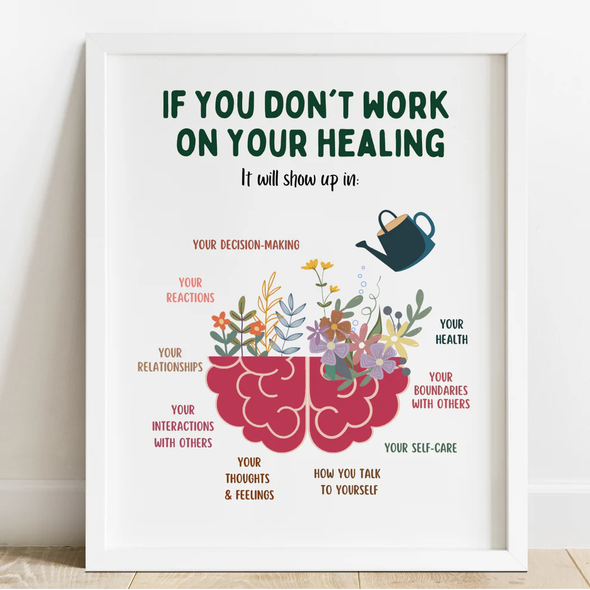

Güvenli, yargısız ve destekleyici bir alanda kendinizi keşfedin. Ay Terapistlik olarak daha iyi bir geleceğe birlikte adım atabiliriz.
Randevu AlAile, bir çocuğun duygusal gelişiminin temel taşıdır. Çocukluk ve ergenlik döneminde ortaya çıkan uyum sorunları, okul kaygıları, öfke nöbetleri veya aile içi iletişim problemleri, doğru müdahalelerle çözülebilecek süreçlerdir. Uzmanlığım doğrultusunda, kanıta dayalı çocuk ve aile terapisi yöntemleriyle hem çocuklarımızın sağlıklı gelişimini destekliyor hem de ebeveynlere bu yolculukta rehberlik ediyorum. Aile dinamiklerinizi iyileştirmek, çocuğunuzun potansiyelini sağlıklı bir şekilde açığa çıkarmak ve evinizdeki huzuru yeniden inşa etmek için buradayım.
Çocuk yetiştirmek, kullanım kılavuzu olmayan bir yolculuktur ve bazen 'Nerede hata yapıyorum?' sorusuyla baş başa kalmak çok doğaldır. Çocuklar ve ailelerle yürüttüğüm terapi süreçlerinde, kitabi formüller uygulamak yerine her ailenin kendi dinamiklerine uygun, yaşayan çözümler üretiyorum. Oyun terapisinin bilimsel gücünü arkamıza alarak; çocukların öfke, korku ya da uyum problemlerini güvenli bir oyun odasında dönüştürüyoruz. Resmi kuralların soğukluğundan uzak, bilimin ışığında ve tamamen çocuğunuzun hızında ilerleyen bir değişim süreci için buradayım.
Çoğu zaman çiftler birbirleriyle değil, birbirleri hakkında zihinlerinde yarattıkları senaryolarla tartışırlar. Aile içindeki çatışmalar ise genellikle bireysel değil, sistemin ortak bir çığlığıdır. Ben, ilişkilerdeki bu 'gürültüyü' azaltıp, birbirinizi gerçekten duymanızı sağlayan profesyonel bir köprü kuruyorum. İlişkinizin tıkanan noktalarını analiz ederken, kurumsal soğukluktan uzak ama bilimsel etik kurallara tamamen bağlı bir süreç yönetiyoruz. Haklıyı ve haksızı seçmek için değil; ilişkinizin geleceğini daha güçlü, dengeli ve huzurlu bir temele oturtmak için bu yolculuğa birlikte çıkabiliriz.
Ablamla iletişime geçmek için formu doldurabilirsiniz.